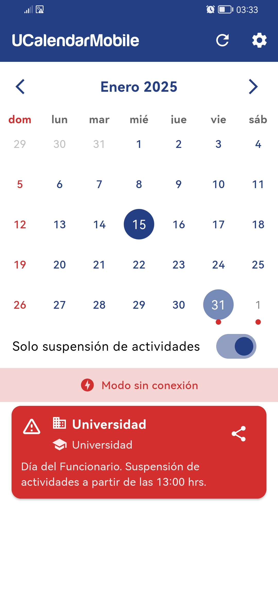
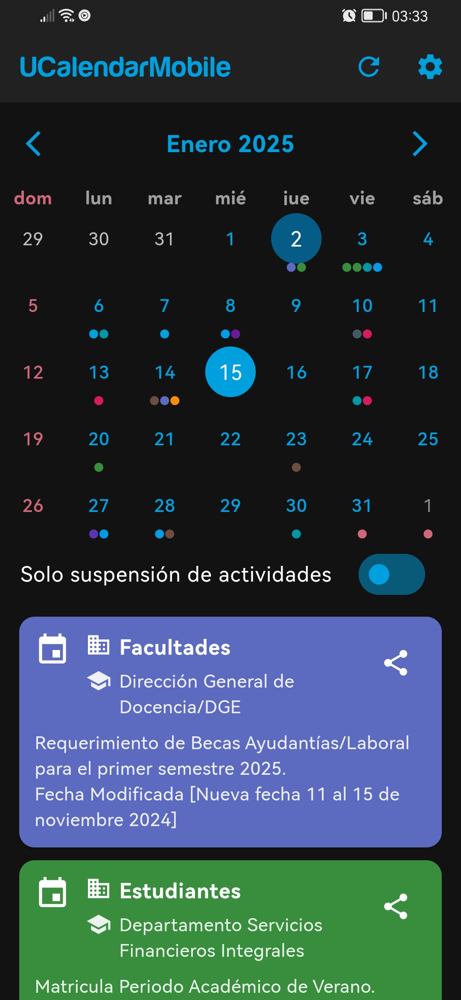

Los estudiantes de la UCM necesitaban una forma más sencilla de consultar eventos académicos, feriados y suspensiones. Para solucionar esto, desarrollé una app móvil que no solo centraliza esta información, sino que además incluye funcionalidades que no están disponibles en los canales oficiales, como un modo sin conexión, próximas notificaciones, y recordatorios personalizados para los estudiantes. La app también ofrece un filtro que muestra solo los eventos con suspensión de actividades. Con más de 100 usuarios activos en menos de tres semanas, la app ha tenido un impacto en la comunidad, mejorando la experiencia frente a los canales oficiales al proporcionar acceso rápido y eficiente a eventos académicos.

